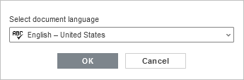
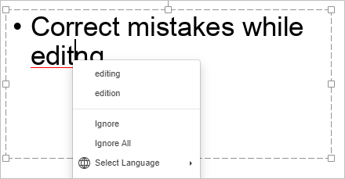

Provera pravopisa
The Presentation Editor omogućava vam da proverite pravopis teksta na određenom jeziku i ispravite greške tokom uređivanja. U desktop verziji, takođe je moguće dodavati reči u prilagođeni rečnik koji je zajednički za sva tri editora.
Počevši od verzije 6.3, ONLYOFFICE editori podržavaju SharedWorker interfejs za stabilniji rad bez značajne potrošnje memorije. Ako vaš pregledač ne podržava SharedWorker, tada će biti aktivan samo Worker. Više informacija o SharedWorker interfejsu možete pronaći u ovom članku.
Pre svega, izaberite jezik za vašu prezentaciju. Kliknite na ikonu sa desne strane statusne trake. U otvorenom prozoru izaberite željeni jezik i kliknite na OK. Izabrani jezik će biti primenjen na celu prezentaciju. Kasnije će biti prikazan kao nedavno korišćen jezik i biće dostupan za brzi pristup u istom meniju. U desktop verziji, jezici instalirani zajedno sa operativnim sistemom biće prikazani na vrhu liste jezika za proveru pravopisa.

Da biste izabrali drugačiji jezik za bilo koji deo teksta u prezentaciji, označite željeni deo teksta mišem i koristite  meni na statusnoj traci.
meni na statusnoj traci.
Da biste uključili proveru pravopisa, možete:
- kliknuti na ikonu Provera pravopisa na statusnoj traci, ili
- otvoriti karticu Datoteka na gornjoj traci sa alatkama, izabrati opciju Napredna podešavanja, označiti polje Uključi proveru pravopisa i kliknuti na dugme Primeni.
Pogrešno napisane reči biće podvučene crvenom linijom.
Desnim klikom na potrebnu reč aktivira se meni i možete:
- izabrati jednu od predloženih ispravno napisanih reči kako biste zamenili pogrešno napisanu reč. Ako postoji veliki broj varijanti, u meniju će se pojaviti opcija Još varijanti...;
- koristiti opciju Ignoriši da preskočite samo tu reč i uklonite podvlačenje ili Ignoriši sve da preskočite sve iste reči koje se ponavljaju u tekstu;
- ako trenutna reč ne postoji u rečniku, možete je dodati u prilagođeni rečnik. Ova reč se ubuduće neće smatrati greškom. Ova opcija je dostupna u desktop verziji;
- izabrati drugi jezik za ovu reč.

Da biste isključili proveru pravopisa, možete:
- kliknuti na ikonu Provera pravopisa na statusnoj traci, ili
- otvoriti karticu Datoteka na gornjoj traci sa alatkama, izabrati opciju Napredna podešavanja, poništiti izbor polja Uključi proveru pravopisa i kliknuti na dugme Primeni.